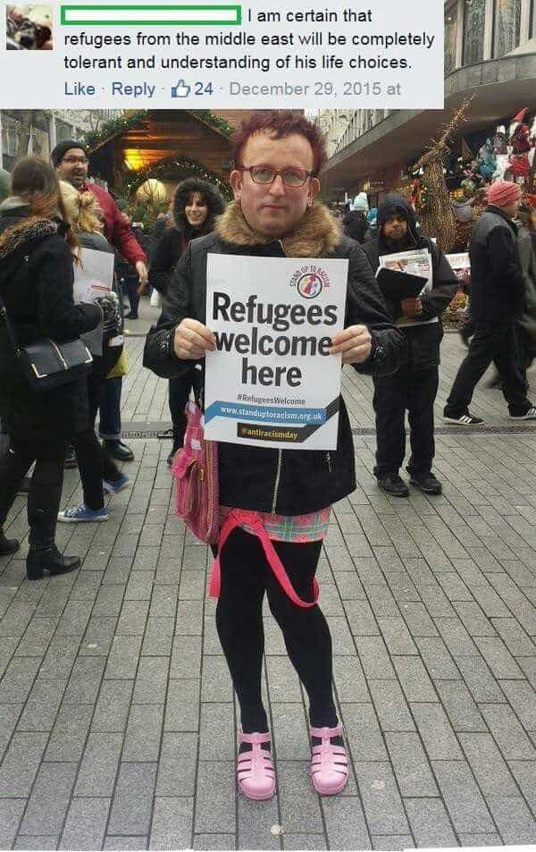
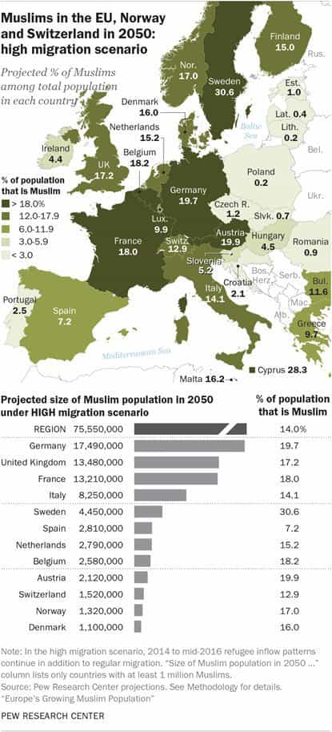

If the flame of the West is snuffed out and the choice is between Islam and “social justice,” I’m choosing the former. Return Of Kings has long pointed out the travesty of open borders migration, which brings in hordes of anti-Western young men from the Middle East. Notwithstanding this, Islamized societies are much more preferable to the many social sicknesses pushed by SJWs.
Should our values be basically exterminated, aside from private contrarian opinions, I am certain that at least superficially going along with Islam will be the right choice for readers of this website as well. The legitimate criticisms we might have of Islam and its applications within countries pale in comparison to the anti-civilization core of so-called social justice. At least we can say that Muslim men are motivated by basic notions of patriarchy and an acknowledgment of gender differences.
The better of two bad situations

Wahhabism in Saudi Arabia > than whatever this “guy” is taking.
Here are just some of the advantages a society based on Sharia Law has over a “society” predicated on social justice principles:
- Unless you fall afoul of a member of the social or political elite, a false rape accusation against a man is extremely unlikely;
- No affirmative action quota is apt to take your job or promotion away from you and give it to a woman;
- The court systems will not buttress the power of activists and others who insist that your child has the “right” to be injected with hormones of the opposite sex and remove the genitals they were born with;
- Crime in your neighborhood will be dealt with, instead of local authorities or the judiciary determining punishments based on gender or race;
-
Female hypergamy will be kept in check; and
- When couples divorce, the wife will know that she will almost never be unjustly enriched, like women with little earning power who get multimillion-dollar payouts from husbands for the rest of their lives.
Put simply, the average man will face far less persecution in an Islamized society than one run by SJWs. Without being defeatist, should the West need to die for a time, embracing Islam is the logical choice for someone who wants to make the most of a collapsed political order.
There’s weight in numbers, too

How can the SJWs control this?
In addition to the rough ideological affinities we share with patriarchal Muslims, demographic realities support the idea of choosing Islam over leftism (if a choice could ever exist). Germany, the United Kingdom, and France are all projected to have Muslim populations of around 20% mid-century. A social laboratory like Sweden will be nearly a third Muslim by that time. Moreover, the political salience of these communities will be even greater than these soon-to-be massive numbers suggest, including the ability to use, like now, aggressive tactics to further Islamic interests.
The mostly pozzed non-Muslim majority will have to kowtow much of the time to the newer arrivals and their descendants. By 2050, expect the incompetence of SJWs to be fully laid to bare, with the authorities powerless to stop the encroachment of strict Muslim values in, say, a “liberal” France or Sweden. Given the option to join with either self-respecting Muslims or obsequious leftists, I know what decision I will be making, potentially long before 2050.
What’s your plan?
Roosh recently spoke about the black pill and the need to accept that all we can sometimes do is enjoy the social decline around us. Likewise, the Age of Trump hasn’t changed many of the deleterious SJW influences within our universities, media outlets, and “popular culture.” The end is not right around the corner, but a lot is still wrong with our societies.
Once the actual fall comes, however, people will have to stop observing and make choices. Inasmuch as we cannot predict everything, the probable successors to Western civilization are already known to us. As of 2017, adopting Islam in the future is the more common sense course of action.
Read More: Why “Social Justice” Exists